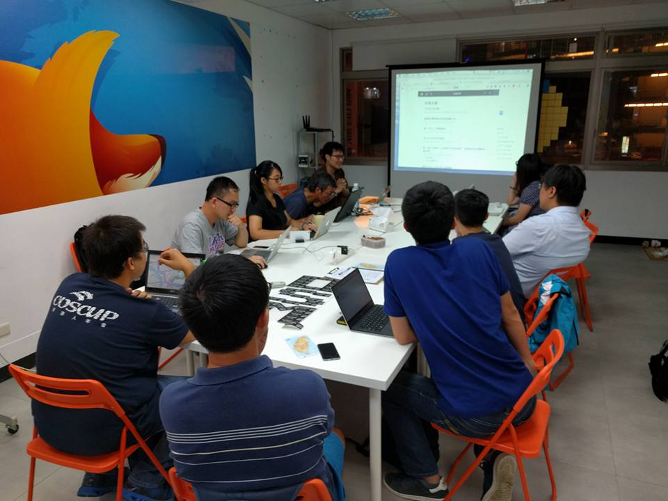

聯絡我們 Contact Us
您可透過以下渠道與社群交流：
Contact our community members via the following channels:
OpenStreetMap Community
Facebook Group
Messenger
Telegram
Slack
您也可以填寫此表單與我們的社群成員聯繫：
Or email our community member via this form:
姓名 Name
Email地址 Email address
主旨 Subject
您的留言 Your message
送出 Submit
收到郵件後，開放街圖台灣社群成員將會儘快與您取得聯繫。謝謝！
OSMTW community members will get back to you as soon as available once received. Much obliged!